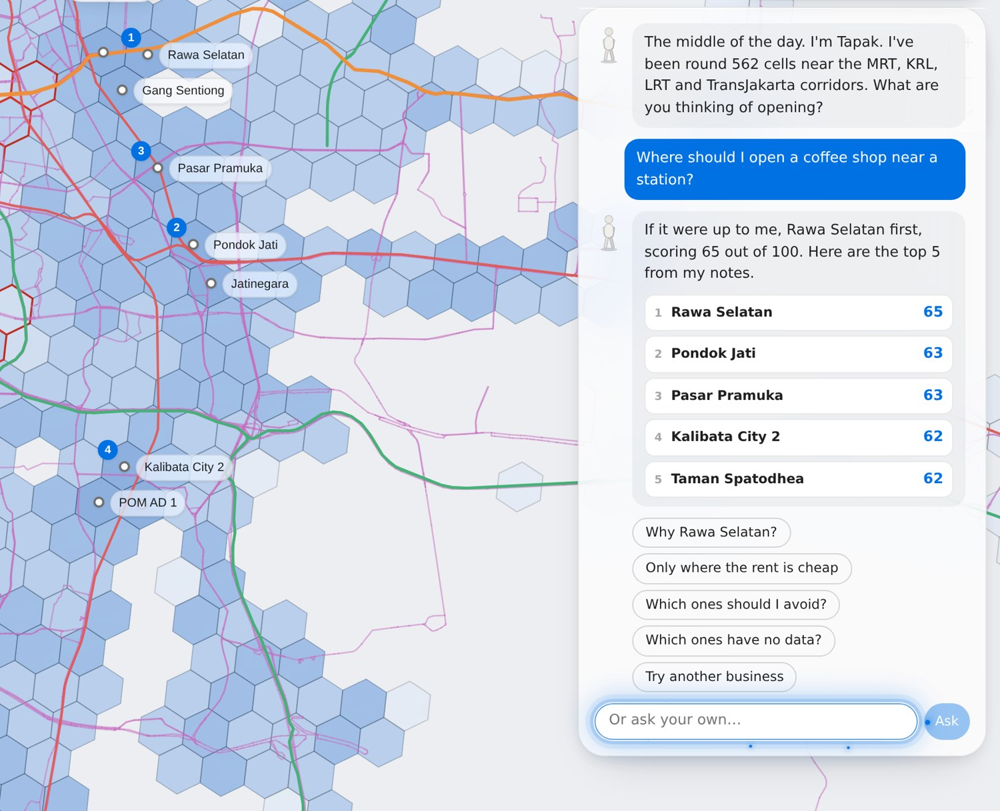
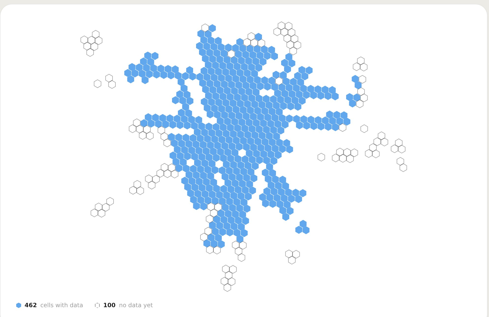
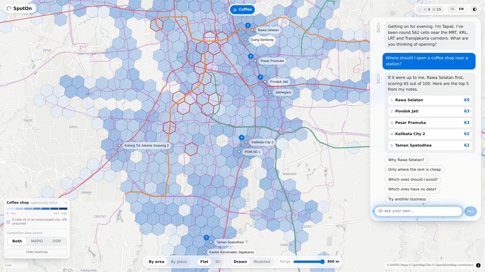
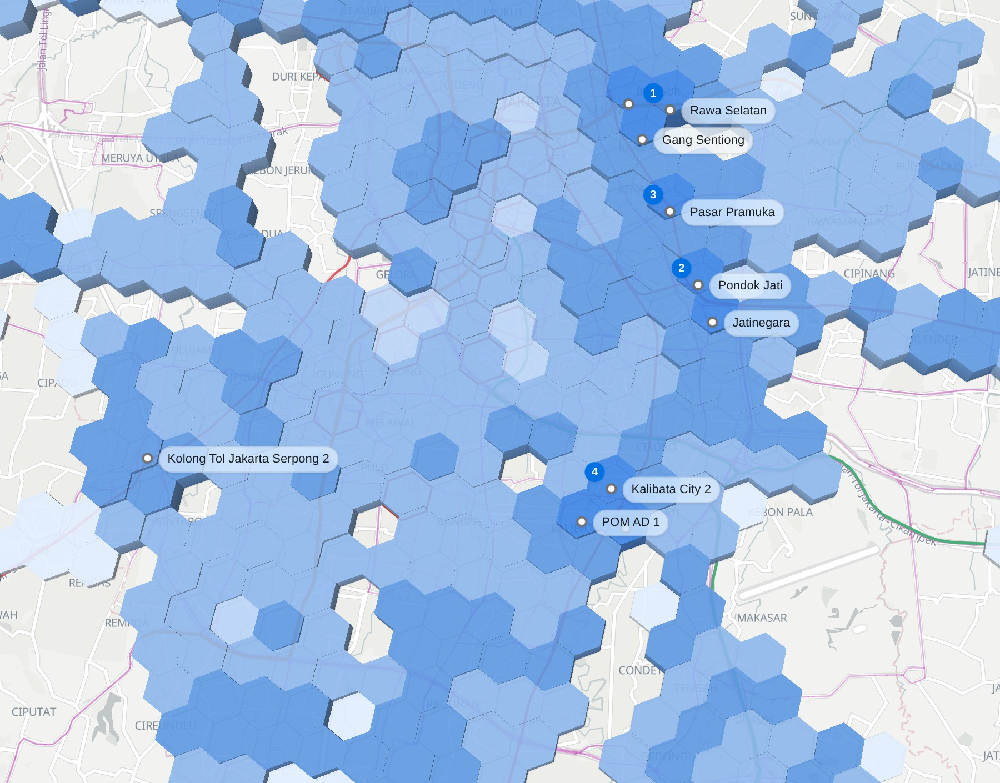

The map that tells small businesses where to open around Jakarta's stations, and why.
2 · Background and problem
You want to open a coffee shop near the station. Everyone says the area is busy. Nobody can tell you which corner, who you are up against, or whether there is even a shop to rent. So you guess. Too many guess wrong, and it is their savings that go.
Which corner is actually busy? Nobody has counted.
Who is already there? The competition is invisible.
Is there space to rent? A good area with nothing to rent is not an opportunity.
Built for the people who take that risk: first-time owners, small businesses, franchise teams and investors.
3 · Objective and solution
Type what you want to open. SpotOn answers with the best spots around Jakarta's stations and the reasons behind each, like a friend who has walked every street.
Is it busy? We counted.
Who is already there? We know them by name.
Is there space to rent? Only spots with space qualify.
From a hunch to a shortlist, in one question.

4 · Data and methodology
Every shop around every station, every unit on the market, and notes from people who walked the streets with MAPID Apps.
Jakarta is cut into walkable cells, and each cell gets one score per kind of business: how busy it is, minus your rivals, only where there is space to rent, with a boost for transit. The AI writes the sentence and never invents a number.

5 · WebGIS and key features

Ask, and the city recolours. No forms, no jargon, no GIS skills.
Open any area and see why: how busy it is, who is already there, what the space costs, and what people noted on the street.
Pick a real shop to rent, not a hexagon. Every unit on the market, ranked with the score of its area.
Turn it your way. Flat or 3D, busy against rivals, walking distance, and where the counts come from.
Indonesian or English. Laptop or phone. Free to look around.
6 · Results and insights
A busy street with only five coffee shops, twelve units up for rent and four transit stops within a walk. The best gap in the city, scored 65 out of 100.
It also says where not to go: seventeen areas are already full of coffee shops. And where nobody has looked yet, it says so instead of guessing.

7 · Benefits and potential applications
A shortlist you can defend in minutes, with the information the chains pay for.
8 · Conclusion
Location was the biggest decision a small business made on the least information. SpotOn turns the shops, the stations and the space around every Jakarta station into one answer you can question, in your own words.
Next: more streets walked with MAPID Apps, rent listings, and two more cities.
9 · Open the WebGIS
github.com/VennethN/SpotOn · Built on MAPID MAPS with MAPID and OpenStreetMap (ODbL) data.